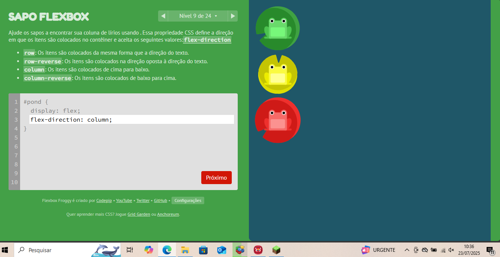
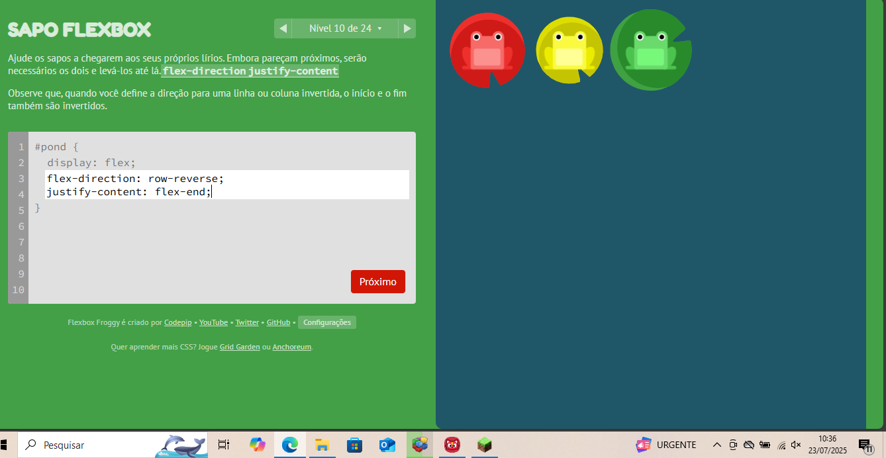
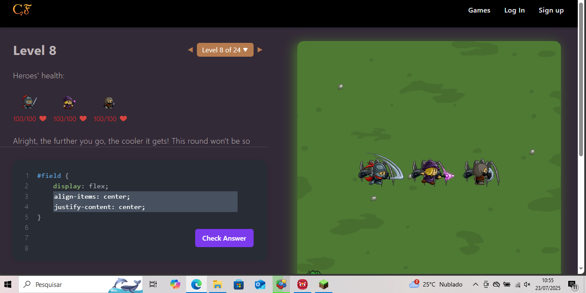
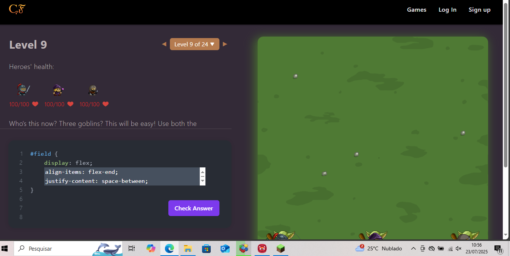
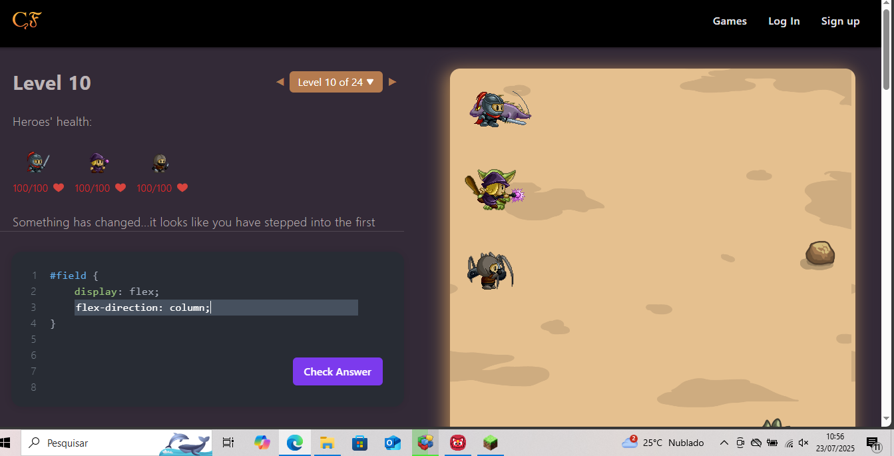

Luick edusrdo neres Costa
Nível 8

Introduz o align-items: flex-end. Foi necessário entender que ele alinha todos os itens no eixo vertical inferior do container.
Nível 9
Apresenta align-items: center. A dificuldade foi entender a diferença entre justify-content (horizontal) e align-items (vertical).
Nível 10
É necessário combinar justify-content e align-items ao mesmo tempo. A coordenação entre os dois eixos pode ser confusa no início.
Nível 8
Desafiador porque exige que os heróis fiquem alinhados no centro do container usando justify-content: center.
Nível 9
Introduz align-items. A complexidade aqui foi alinhar todos verticalmente sem afetar a posição horizontal.
Nível 10
Mais difícil por envolver a combinação de flex-direction: column e justify-content em eixo vertical.
display: flex – Define o container como flexívelflex-direction – Controla a direção dos itens (linha ou coluna)justify-content – Alinha os itens no eixo principalalign-items – Alinha os itens no eixo cruzadoalign-self – Alinha individualmente um item dentro do containerorder – Define a ordem de exibição dos itensflex-wrap – Permite que os itens quebrem para outra linhagap – Espaçamento entre os itensImaginei um layout de menu lateral com conteúdo principal. Usaria Flexbox assim:
display: flex no container principalflex-direction: row para deixar o menu à esquerda e o conteúdo à direitaflex: 1 no conteúdo para ocupar o restante da telaalign-items: stretch para deixar ambos com altura igualgap para espaçar menu e conteúdo